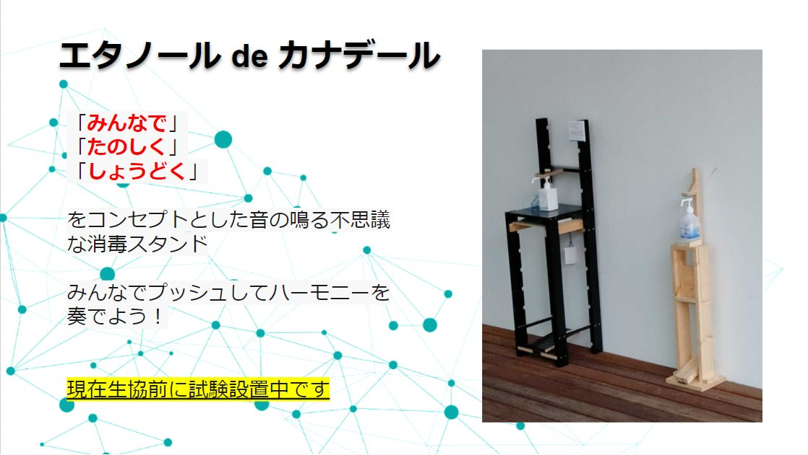
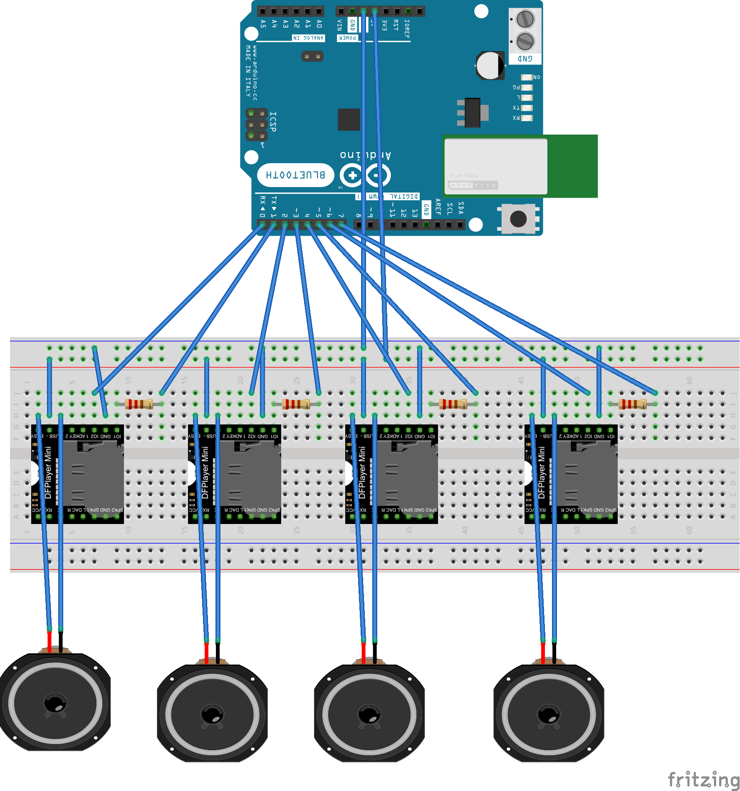
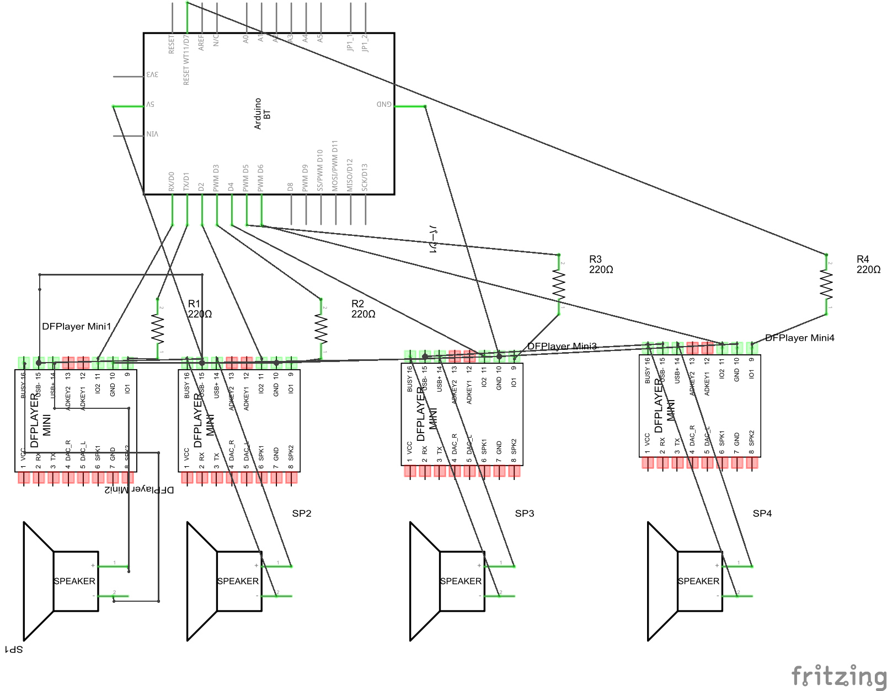
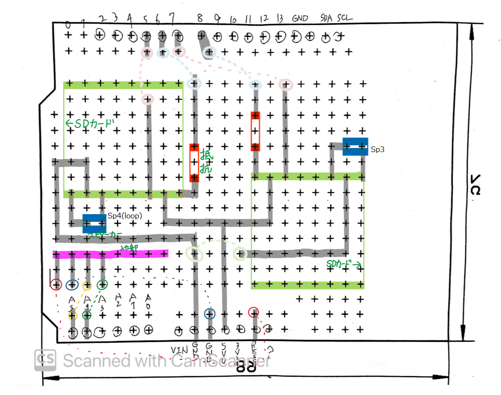

猫神様
エタノールdカナデール
大学の生協に設置(2022)
URL
https://github.com/tyukei/tukuech-washingHands
使用言語、ライブラリ、サービス
miro, fritzing, Arduino
かかった日数
1年半
動機
大学で消毒液をしている人が減ってた。でも感染症対策はしないといけない。もっと魅力的な消毒液があればみんなも消毒してくれるのではないか
力をいれたところ
ユーザ調査、分析、設計、実装、設置までを一から行ったことです
ユーザ調査では、消毒液を使う人の特徴を調べたり、消毒液を使う人の感情を調べたりしました。各自分かれてアンケート、観察を行いました。
分析では、消毒液を使う人の特徴を分析し、どんな人が消毒液を使うのかを分析しました。各自で調べてきたことから満たすべき要件定義を話合いました。
設計では、要件定義に基づき、コンセンサスをとりながらプロダクトを決定しました。どのような日程で、どのようなハードを使うかも話し合いました。
実装では、ハードウェアとソフトウェアを実装しました。私は、電子回路の設計、スピーカの出力部を担当しました。
設置では、大学の生協側にプレゼンをし、実際に設置まで行いました。その後、ユーザ観察や、メンテナンスを行いました。
ユーザ調査
分析
設計
  
今後
モバイルバッテリーから給電しているが、発電機を使って電力を自給自足にしたいです。 例えば、ソラーパネルの利用や、踏む力を利用した発電機の利用など。